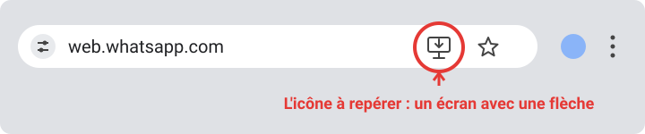
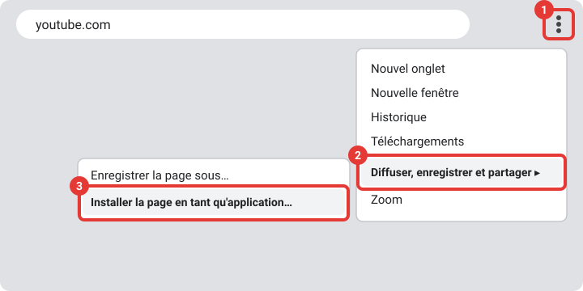
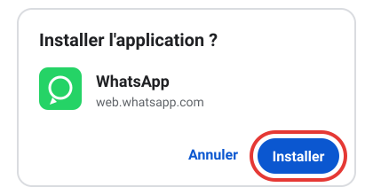
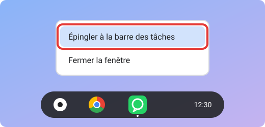

Utiliser WhatsApp dans le navigateur
Utilise WhatsApp sur ton ordinateur du lycée, et installe même l'app.
-
Ouvre WhatsApp Web
Clique sur le bouton ci-dessous : la page s'ouvre dans un nouvel onglet et affiche un QR code.
Ouvrir WhatsApp Web -
Ouvre WhatsApp sur ton téléphone
Il faut déjà avoir un compte WhatsApp sur ton téléphone : WhatsApp Web ne permet pas d'en créer un.
Android : appuie sur les trois petits points en haut à droite, puis sur « Appareils connectés », puis sur « Connecter un appareil ».
iPhone : ouvre l'onglet « Réglages » en bas à droite, puis « Appareils connectés », puis « Connecter un appareil ».
-
Scanne le QR code
Pointe la caméra de ton téléphone vers le QR code affiché sur l'écran de l'ordinateur. Tu ne peux pas scanner ? Sur la page WhatsApp Web, choisis « Se connecter avec le numéro de téléphone » et suis les instructions.
-
Utilise WhatsApp sur l'ordinateur
Tes discussions apparaissent dans le navigateur : tu peux lire et écrire tes messages. Pour garder la connexion active, ouvre WhatsApp sur ton téléphone de temps en temps (au moins une fois tous les 14 jours).
Tu utilises un ordinateur qui n'est pas le tien ? Déconnecte-toi à la fin : clique sur le menu (trois petits points) au-dessus de la liste des discussions, puis sur « Se déconnecter ».
Bonus : installer WhatsApp comme une vraie application Chromebook (Chrome OS) uniquement
Sur un Chromebook, tu peux transformer WhatsApp Web en application : elle s'ouvre dans sa propre fenêtre, avec son icône. À faire seulement sur ton propre Chromebook.
-
Ouvre WhatsApp Web dans Chrome
Sur ton Chromebook, ouvre le navigateur Google Chrome, va sur web.whatsapp.com et connecte-toi.
-
Repère l'icône d'installation
Tout à droite de la barre d'adresse (là où il y a « web.whatsapp.com »), cherche cette icône : un petit écran d'ordinateur avec une flèche vers le bas.

Tu ne la vois pas ? Attends quelques secondes, ou ouvre le menu (les trois points en haut à droite de Chrome, cadre n°1), puis « Diffuser, enregistrer et partager », puis « Installer la page en tant qu'application… » (le nom peut varier selon ta version).

-
Clique sur l'icône, puis sur « Installer »
Une petite fenêtre s'ouvre : clique sur le bouton bleu « Installer ».

Si WhatsApp est déjà installé, l'icône affiche « Ouvrir dans l'application » : clique dessus pour l'ouvrir.
-
WhatsApp s'ouvre dans sa propre fenêtre
Sa petite icône verte apparaît dans la barre des tâches, la barre qui se trouve en bas de l'écran.
-
Épingle l'application à la barre des tâches
Fais un clic droit (ou touche le pavé tactile avec deux doigts) sur l'icône WhatsApp dans la barre des tâches, puis clique sur « Épingler à la barre des tâches ».

Tu pourras ouvrir WhatsApp en un clic, sans passer par Chrome.